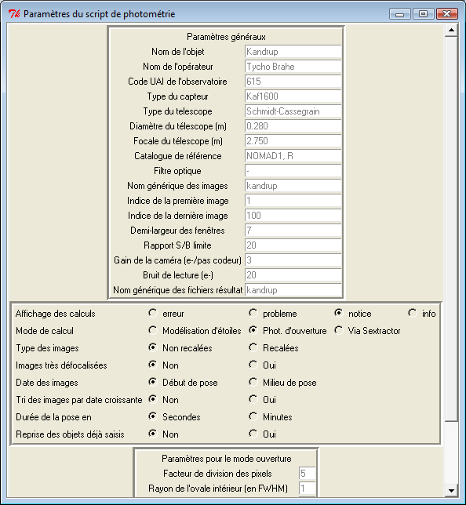

Date de mise à jour : 9 novembre 2011
Tutoriel photométrie
1. Qu'est-ce que la photométrie ?
La photométrie consiste à déterminer
l'éclat d'un astre dont on a enregistré une image
numérique. L'éclat est basé sur le système
des magnitudes et des bandes photométriques. Une bande
photométrique est la désignation d'un domaine de couleur
dans lequel on a observé. Habituellement les bandes
photométriques optiques sont B, V, R, I. La magnitude est un
nombre sans dimension qui est reliée à
l'éclairement d'une étoile (W/m2).
L'étoile Véga a servi de point de référence
de l'échelle des magnitudes. Cette étoile a la magnitude
zéro dans les différentes bandes photométriques.
Sur une image numérique, on peut facilement mesurer
l'intensité (I) d'un pixel. Cette intensité est
exprimée en unité du convertisseur numérique de la
caméra, habituellement noté ADU. Il s'agit de la valeur
affichée dans le cartouche du bas de AudeLA après le
symbole I.
L'opération de calibration astrométrique consiste
à calculer les équations de passage entre les mesures (I)
et les magnitudes (mag). La formule de Pogson est à la base de
la photométrie. Pour deux étoiles 1 et 2 de magnitude
mag1 et mag2 et de flux intégré I1 et I2, on aura la
relation :
mag2 - mag1 = -2.5 * log10 ( I2/I1 )
D'un point de vue technique, la calibration photométrique
consiste à calculer les valeurs des coefficients à
introduire dans les équations mathématiques pour passer
de (I) à (mag). Contrairement à la calibration
astrométrique il n'existe pas de mots clé
équivalents aux WCS pour par photométrie.
On distingue deux types de photométrie :
- La photométrie relative : On calcule seulement la
différence de magnitude d'une étoile par rapport à
une autre. C'est une opération assez simple qui n'exige pas
l'usage de catalogues photométriques. Par cette méthode
on peut déjà mettre en évidence les changements
d'éclat d'une étoile variable en la comparant à
une autre étoile réputée stable. Les fonctions du
type photrel_* sont adaptées à la photométrie
relative. Le script Calaphot permet aussi de pratiquer la
photométrie relative sur une grande série d'images.
- La photométrie absolue : On calcule la magnitude dans un
système photométrique. Pour réussir une
calibration photométrique en absolu, il faut au moins deux
images obtenues avec des filtres différents. Dans ce cas, il
faut utiliser un catalogue photométrique. Les fonctions du type
photcal_* sont adaptées à la photométrie absolue.
Dans AudeLA on utilise le catalogue photométrique Loneos. Ce
catalogue est livré avec la distribution de AudeLA. Il se trouve
à gui/audace/catalogues/cataphotom/loneos.phot
2. Commande de console pour pratiquer la photométrie absolue
d'une seule étoile sur une seule image
Il n'est pas nécessaire d'avoir calibré les mots
clé WCS avant les opérations suivantes mais, comme on le
verra plus loin, ça peut aider. Cette méthode est
très utile pour déterminer rapidement la magnitude d'un
astre qui vient d'être découvert. Par exemple une
supernova.
Le principe consiste à mesurer le flux intégral d'une
étoile (en ADU) dont on connaît la magnitude. On
connaît alors I1 et mag1 pour cette étoile. On mesure
ensuite le flux intégrale de l'étoile à mesurer
(I2). A partir de la formule de Posgon, il est évident que l'on
calcule m2 de la façon suivante :
mag2 = mag1 -2.5 * log10 (
I2/I1 )
On a l'habitude d'écrire cette équation en rassemblant
les termes de l'étoile 1, appelée
aussi étoile de référence :
mag2 = [mag1 + 2.5 * log10 ( I1
)] - 2.5 * log10 ( I2 ) = ZMAG - 2.5 *log10 (I2)
ZMAG est appelée constante des magnitudes. Si l'on prend une
autre étoile de référence on doit retouver la
même valeur de ZMAG. Le terme -2.5*log10(I2) est appelé
habituellement "magnitude instrumentale".
En pratique, on repère une étoile de
référence. Il faut connaître la magnitude de
l'étoile. Si l'image n'est pas calibrée WCS, il faut
identifier l'étoile dans un catalogue et noter sa magnitude. Si
l'image est calibrée WCS, il
suffit de l'entourer avec un cadre bleu (utiliser la souris) puis de
faire clic droit et demander Ajuster une gaussienne. Dans le console de
AudeLA, on pourra lire de nombreuses informations. Par exemple :
# === Visu1 === Ajuster une gaussienne ===
# Coordonnées de la fenêtre : 835 646 857 666
# Centre : 845.40 / 656.79
# Fwhm : 2.401 / 2.588
# Intensité : 15782.222164 / 16116.749379
# Fond : 484.364238 / 479.551073
# Flux intégré : 112476.324382 +/- 1179.548735
# Magnitude instrumentale -2.5*log10(flux) : -12.628 +/- 0.011
# AD Déc. : 164.867805 67.509553
# AD Déc. : 10h59m28s27 +67d30m34s39
# OLD Format MPC :
. C2011 02 05.20321 10 59 28.27 +67 30 34.3 -8.7 148
# Attention :
# Le site UAI 148 doit être celui où l'image a été acquise.
# Use http://cfa-www.harvard.edu/iau/info/Astrometry.html for informations.
# Use ::astrometry::mpc_provisional2packed to convert designation to MPC packed form.
Les coordonnées
(Ra,Dec) sont affichées sous deux formes différentes
après les mots AD Déc. Utiliser la commande de console
vo_neareststar pour demander les magnitudes de l'étoiles dans le
catalogue NOMAD1 (il faut être relié internet). Les
paramètres de la commande vo_neareststar sons les
coordonnées célestes. Dans notre exemple, on obtient :
vo_neareststar 164.867805 67.509553
# {NOMAD-1 1575-0155537} 164.8682919 +67.5094956 13.204 12.224 11.610 11.631 11.339 11.333
La liste du résultat est de la forme : Id Ra Dec B V R I J H K.
Si l'image a été réalisée avec un filtre R
alors la magnitude R=11.61.
Dans la liste des résultats affichés après
l'ajustement de la gaussienne, on note que le flux
intégré vaut I=112476 ADU. Au regard des formules ci
dessus, on en déduit que la constante des magnitudes vaut :
ZMAG = mag1 + 2.5 * log10 ( I1 )
= 11.61 + 2.5 * log10(112476) = 24.24
On peut calculer ZMAG avec d'autres étoiles connues du champ et
garder une valeur moyenne de ZMAG pour calculer la magnitude de
l'étoile inconnue. Néanmoins, cette méthode ne
prend pas en compte les différences de couleurs entre les
étoiles, facteur qui influe sur la valeur de ZMAG.
Pour calculer la magnitude de l'étoile inconnue, on l'entoure
avec un cadre bleu (utiliser la souris) puis faire clic droit et
demander Ajuster une gaussienne. On note la valeur du flux
intégré (I2). Par exemple I2 = 10456 ADU. Puis utilise la
formule :
mag2 = ZMAG -2.5*log10(I2) = 24.24 -
2.5 * log10(10456) = 14.19
On peut donc annoncer une magnitude R=14.19 pour notre étoile
inconnue. L'incertitude typique d'une telle mesure est de l'ordre de
+/- 0.5 magnitude en raison des problèmes de la
différence de couleur entre l'étoile à mesurer et
l'étoile de référence.
3. Pratiquer la photométrie relative d'une seule
étoile sur une série images en utilisant Calaphot
Il n'est pas nécessaire d'avoir calibré les mots
clé WCS avant les
opérations suivantes. Cette méthode est très utile
pour mesurer rapidement la magnitude
d'un astre supposé variable dans le temps. Par exemple un
astéroïde ou une étoile variable.
Ouvrir le menu Analyse et prendre l'item Courbes de lumières
(Calaphot). Il faut remplir les renseignements demandés dans la
fenêtre de configuration de Calaphot :

Appuyer sur le bouton Continuer en bas de la fenêtre. Le reste de
l'opération est intuitf.
4. Commande de console pour pratiquer la photométrie
relative d'une seule étoile sur une série d'images
en utilisant photrel
Dans ce cas, il est nécessaire d'avoir calibré les mots
clé WCS avant les
opérations suivantes. Cette méthode est très utile
pour mesurer rapidement la magnitude
d'un astre supposé variable dans le temps. Par exemple un
astéroïde ou une étoile variable. Par rapport
à Calaphot, l'intérêt de cette méthode est
qu'elle choisit elle même les étoiles de
référence et élimine celles qui ont un
éclat variable. L'avantage de photrel est de pouvoir être
incroporé dans un script qui effectue les opérations de
façon automatique. Utile pour un télescope robotique par
exemple.
4.1. Description des méthodes utilisées dans photrel
Les fonctions photrel utilisent des fonctions de la librairie libyd
développée par Yassine Damerdji dans le cadre d'un
travail de thèse en astrophysique. Le but était de
développer des outils informatiques très rapides pour
extraire des courbes de lumières et pour identifier et
caractériser des nouvelles étoiles variables.
La methode est centrée sur la création d'un fichier
catalogue des étoiles mesurées dans les images prises
différentes dates. En pratique, un catalogue est
représenté par trois fichiers afin d'optimiser la vitesse
de traitement. Les trois fichiers sont appelés MES, REF et ZMG.
- MES = fichier des mesures. Chaque entrée correspond a une
etoile pour une date.
- REF = fichier des references. Chaque entree definit les
coordonnées
et la magnitude moyenne d'une seule etoile dans divers filtres
eventuellement.
- ZMG = fichier des corrections de magnitudes pour chaque date.
Ces fichiers sont écrits en binaires, donc non lisibles avec un
éditeur de texte. Néanmoins, la fonction
yd_refzmgmes2ascii permet de transformer le binaire en ASCII si l'on
intéressé par lire le contenu. La signification des
colonnes des fichiers est décrite dans la thèse de
Yassine Damerdji.
A noter que le filtre est identifié par le symbole du mot
clé FILTER dans l'entête FITS. Par défaut, le
filtre sera pris égal à C (pour clear) s'il n'est pas
précisé.
4.1.1. photrel_wcs2cat
La fonction photrel_wcs2cat permet de créer les trois fichiers
catalogue à partir d'une série d'images FITS
calibrées WCS. On peut résumer cela ainsi :
[images FITS]
--(photrel_wcs2cat)--> [3 fichiers MES, REF, ZMG]
4.1.2. photrel_cat2mes
A partir des fichiers catalogues, on peut demander à extraire la
courbe de lumière d'une seule étoile en utilisant la
fonction
photrel_cat2mes. Le résultat est un fichier ASCII (noté
MES.txt) par
étoile variable trouvée. On peut résumer cela
ainsi :
[3 fichiers MES, REF,
ZMG] --(photrel_cat2mes)--> [MES.txt]
Voici un exemple d'un tel fichier MES.txt :
2455175.410301 16.265 0.115 0
2455175.420243 16.894 0.208 1
2455175.425648 16.006 0.107 0
2455448.591299 16.871 0.219 1
La première colonne est le jour julien de la mesure, la seonde
colonne est la magnitude, la troisieme colonne est l'erreur
estimée sur la magnitude et la quatrième colonne est un
flag qui provient du logiciel Sextractor utilisé pour mesurer
les magnitudes. Si le flag =0 alors la mesure est valable.
4.1.3. photrel_cat2var
A partir des fichiers catalogues, on peut demander à extraire
toutes les étoiles candidates variables en utilisant la fonction
photrel_cat2var. Le résultat est un fichier ASCII (noté
VAR.txt) par étoile variable trouvée. On peut
résumer cela ainsi :
[3 fichiers MES, REF,
ZMG] --(photrel_cat2var)-->
[VAR.txt]
Voici un exemple d'un tel fichier VAR.txt :
NAME = STAR-N321200310-36
RA = 22.878330
DEC = 1.475810
EQUINOX = J2000.0
FILTER = C
CAMERANO = 2
PROC = photrel_cat2var
MEAN = 16.550468
CRITVAR = 5.333820
END
2455175.410301 16.265 0.115 0
2455175.420243 16.894 0.208 1
2455175.425648 16.006 0.107 0
2455448.591299 16.871 0.219 1
On reconnait que la partie des données est formatée
exactement de la même façon qu'un fichier MES.txt. Une
entête a simplement été ajoutée au
début de la série de mesures afin de donner des
renseignements sur l'étoile, notamment ses coordonnées
célestes (ra,dec).
4.1.4. photrel_wcs2var
Cette fonction effectue l'enchainement de photrel_wcs2cat et
photrel_cat2var. On peut résumer cela ainsi :
[images
FITS] --(photrel_wcs2var)-->
[VAR.txt]
4.1.5. photrel_cat2per
Cette fonction extrait la courbe de lumière d'une seule
étoile comme photrel_cat2mes) mais cette courbe est
analysée par différents algorithmes pour
déterminer la meilleure période dans le cas d'un
phénomène périodique stable. On peut
résumer cela ainsi :
[3 fichiers MES, REF,
ZMG] --(photrel_cat2per)-->
Période
4.2. Extraction de la courbe de lumière d'une seule
étoile
On part d'une série de fichiers. Par exemple, ic1.fit
jusqu'à ic50.fit. On commence par utiliser photrel_wcs2cat pour
créer le catalogue:
photrel_wcs2cat ic 10 new
Il faut alors connaître les coorodnnées (ra,dec) de
l'étoile à extraire (cf. paragraphge 2). On utilise alors
la fonction photrel_cat2mes :
photrel_cat2mes ic mystar 164.630162 67.525332 C
Le fichier MES.txt s'appelera mystar.txt. Les deux valeurs 164.630162
et 67.525332 représentent (Ra,Dec) en équinoxe J2000.0.
Enfinc le symbole C sert à spécifier le filtre qui a
été utilisé (C s'il n'a pas été
précisé par le mot clé FILTEr dans l'entête
FITS).
Si l'étoile est variable, on peut rechercher sa période
en utilisant photrel_cat2per avec exactement les mêmes arguments
que photrel_cat2mes :
photrel_cat2per ic mystar 164.630162 67.525332 C
Le résultat est donné en jour et un graphique montre la
courbe de lumière phasée.
5. Commande de console pour trouver automatiquement toutes les
étoiles variables dans une série d'images
Dans ce cas, il est nécessaire d'avoir calibré les mots
clé WCS avant
les
opérations suivantes et on utilise photrel (cf. paragraphe 4.1).
Cette méthode est très utile pour trouver les candidates
étoiles variables dans un champ qui contient beaucoup
d'étoiles et qui a été observé plusieurs
dizaines de fois.
On part d'une série de fichiers. Par exemple, ic1.fit
jusqu'à ic50.fit.
On commence par utiliser photrel_wcs2cat pour créer le catalogue:
photrel_wcs2cat ic 10 new
On peut ensuite demander l'extraction des étoiles variables en
appelant photrel_cat2var :
photrel_cat2var ic
Une liste de fichiers de type VAR.txt est généré.
Dans l'entête de ces fichiers ASCII on trouvera les
coordonnées célestes (ra,dec). Il suffit d'utiliser la
fonction photrel_cat2per pour déterminer la période des
candidates variables.
A la fin de l'analyse, un fichier html est généré
ainsi que des images gif des courbes de lumières des candidates
variables. Il est facile de visualiser l'ensemble des candidates avec
un navigateur web.
6. Commande de console pour calibrer en absolu les toutes les
étoiles d'une série d'images
Dans ce cas, il est nécessaire d'avoir calibré les mots
clé WCS avant
les
opérations suivantes et on utilise photcal. On recherche les
coefficients de transformation en analysant le flux des etoiles qui
sont dans le catalogue Loneos. Il est donc primordial d'avoir
réalisé des images qui contiennent des étoiles
Loneos.
L'usage du filtre est donc obligatoire. Le filtre doit être
identifiée par le mot clé FILTER dans l'entête FITS
des images.
6.1. Description des méthodes utilisées dans photcal
Le principe de la calibration photométrique en absolue est le
suivant. Sextractor (Bertin, E. & Arnouts, S. 1996, Astronomy &
Astrophysics Supplement 317, 393) est utilisé pour extraire
le flux des étoiles. Si l'on a utilisé un filtre R,
sextractor fourni flux_R (flux_V pour un filtre V, etc.). La
conversion entre les flux et les mangitudes suit les équations
suivantes :
R = ZMAGR - 2.5 log(flux_R) + COEFR*(V-R) - KR*Airmass_R
V = ZMAGV - 2.5 log(flux_V) + COEFV*(V-R) - KV*Airmass_V
ZMAGR, ZMAGV, COEFR, COEFV, KR et KV sont calculés avec des
étoiles de magnitude V et R connues. Pour choisir ces
étoiles, on utilise le catalogue Loneos ("UBVRI photometry of
faint field stars" Skiff, B.A, 2007 yCat.2277....0S, VizieR
On-line Data Catalog: II/277). Loneos est based sur le système
Johnson-Cousins UBVRI. En conséquence,les couleurs R et I sont
calculés dans le système de Cousins.
6.2. Pratique de la photométrie absolue automatique
Placer toutes les images de la nuit dans le répertoire des
images de la configuration de AudeLA (peut importe les noms et les
filtres). La fonction photcal_selectfiles va selectionner les fichiers
compatibles avec l'analyse photometrique (rejette les images
réalisées sans filtre et ne garde que les couples
d'images qui ont été réalisée avec deux
filtres différents).
On va créer le fichier commun des etoiles présentes dans
le catalogue Loneos avec la fonction photcal_matchfiles.
On utilise photcal_plotfit pour effectuer le calcul d'ajustement des
parametres photometriques.
On utilise photcal_calibrate pour extraire les magnitudes
calibrées de toutes les étoiles.